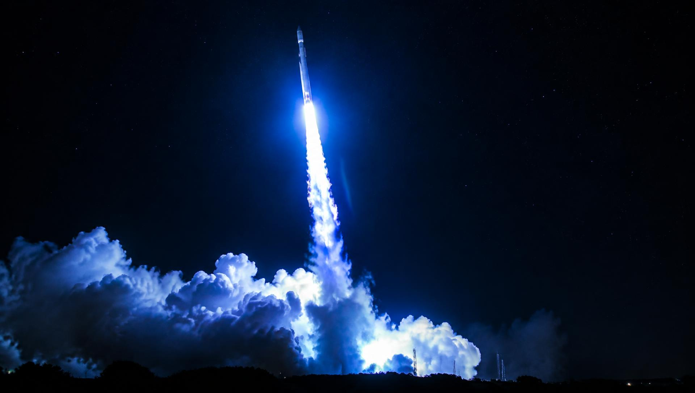
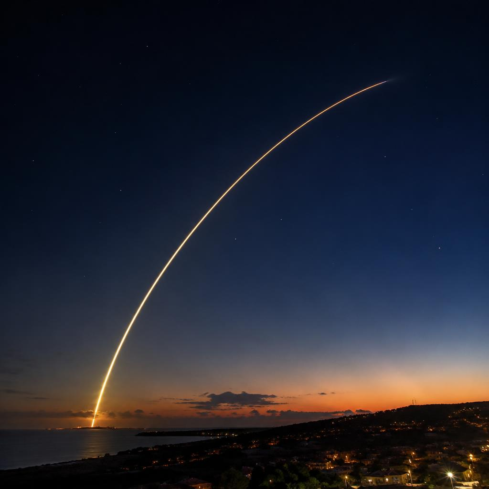
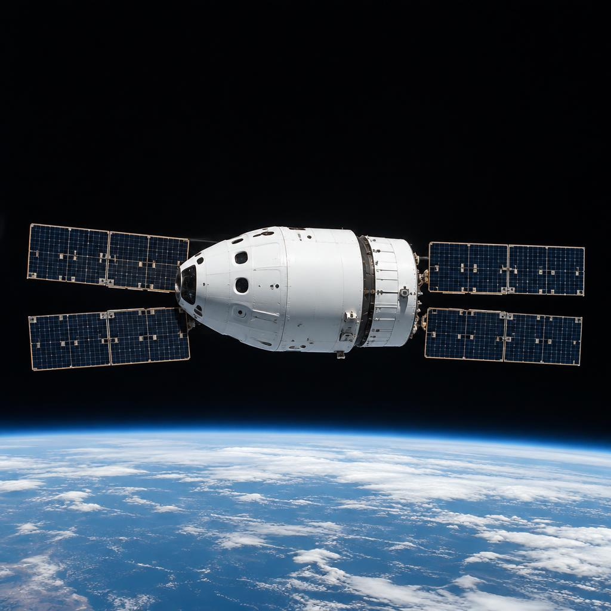
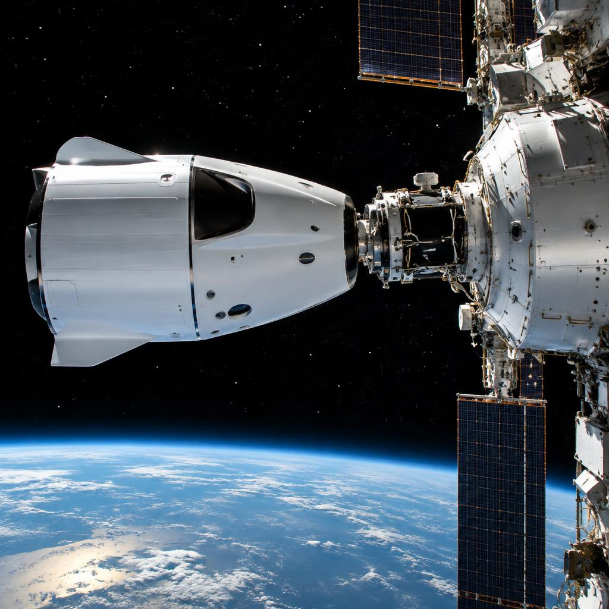
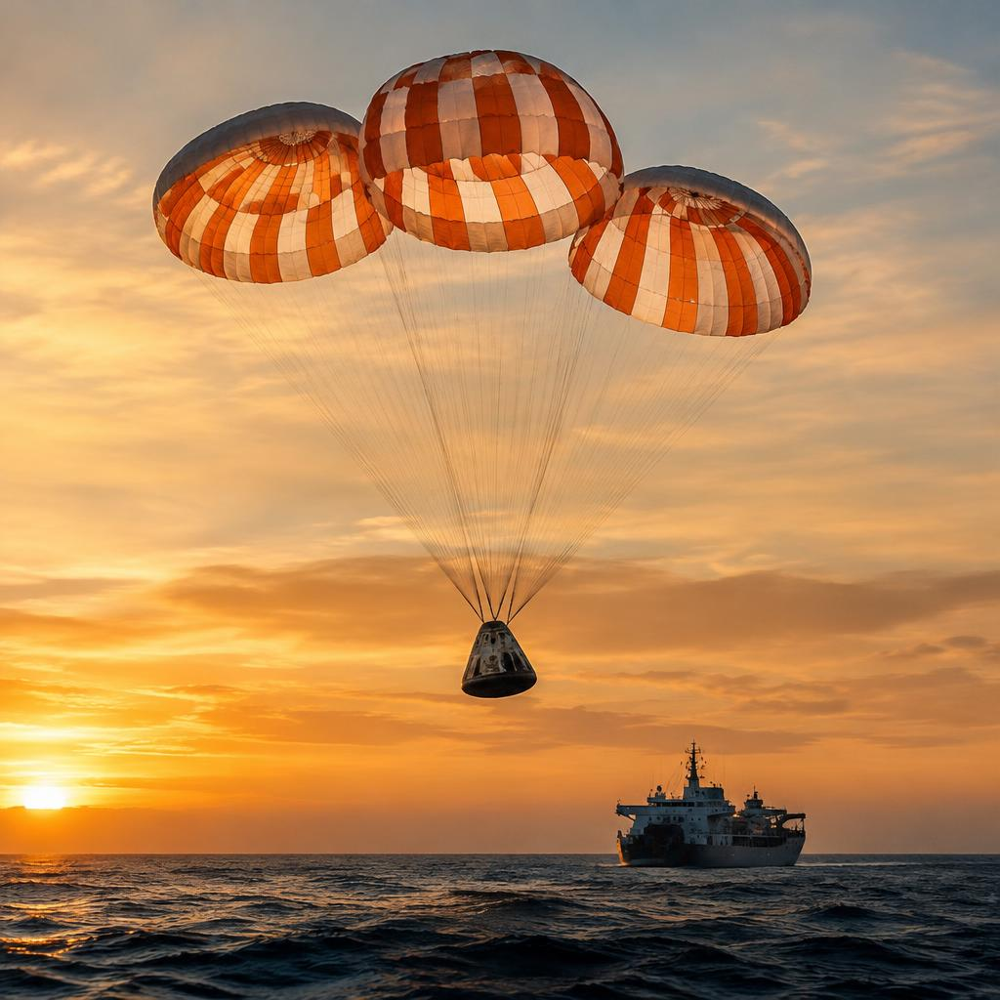

Human Spaceflight · Crew Capsule
Crew Capsule
A pressurised spacecraft for up to seven crew, designed to fly autonomously — with every crewed system triple-redundant and an escape path at every second of flight.

Step 1 — riding the rocket
The capsule sits on top of an OrbitX One inside the payload fairing — crew enter about two hours before launch through a side hatch, strapped into seats oriented to cushion the forces of ascent.
This is the most dangerous phase of any spaceflight, so the capsule carries its own escape system: eight powerful engines built into the capsule's flanks. If the rocket fails at any point — on the pad, through max-Q, or seconds from orbit — the capsule detects the failure and fires them automatically, pulling the crew clear in under two seconds and parachuting to safety.

Step 2 — living and flying on orbit
Once in orbit, the capsule becomes a small self-sufficient home. Life-support machines scrub carbon dioxide, manage humidity and keep the cabin at one atmosphere. Food, water and sleeping arrangements are built in; crews fly for up to a week without a resupply.
Flying it is mostly automatic. The primary control surfaces are three touchscreens; astronauts monitor systems rather than hand-fly, though every control has a manual fallback — the crew can steer the capsule, burn the engines and dock by hand if the automation ever fails.

Step 3 — docking with the station
Approach happens in stages, each slower than the last. From kilometres away, navigation is handled by satellite positioning and star trackers; inside two hundred metres, a suite of lidar and cameras takes over, and the capsule walks itself in at centimetre per second speeds.
Docking is soft-catch: a probe on the capsule extends into the station's port, absorbs the contact energy, retracts to pull the vehicles flush, and twelve latches close to seal an airtight tunnel. Crew and cargo then float through — the same design flies in both crewed and cargo configurations.

Step 4 — coming home
Reentry begins with the trunk — the unpressurised service module behind the capsule — being jettisoned, followed by a deorbit burn that aims the capsule at the landing corridor. Falling through the atmosphere, the heat shield takes the brunt: plasma at 1,600 °C surrounds the capsule while the crew inside stays at room temperature.
At nine kilometres altitude, two drogue parachutes stabilise the fall; at three kilometres, four main parachutes deploy and slow the capsule to 35 km/h for a gentle ocean splashdown. A recovery ship collects the crew, hoists the capsule aboard, and it is refurbished for its next flight.
Next: Space Suits